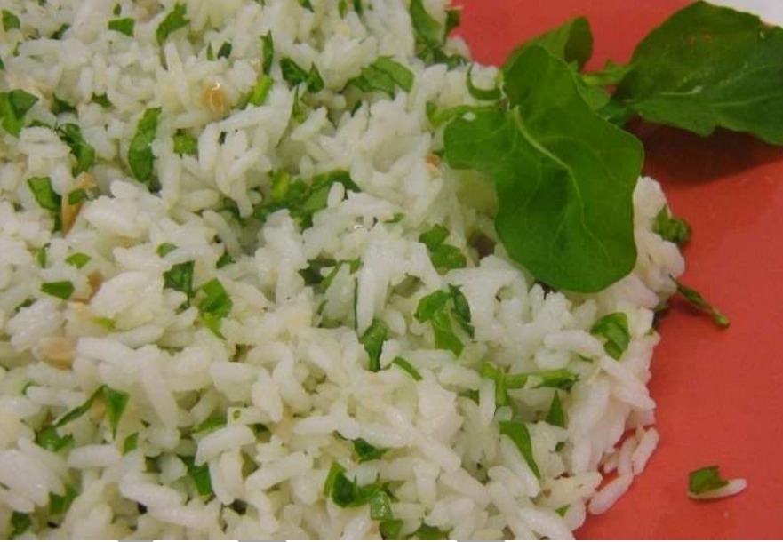

.....
Almeirão com Arroz Branco
Como fazero o seu Almeirão com Arroz Branco?
O Almeirão com Arroz Branco é uma combinação deliciosa e saudável que destaca a simplicidade e os sabores frescos. Originária da culinária brasileira, essa receita tradicional ganhou popularidade devido à facilidade de preparo e à combinação equilibrada de ingredientes.
Ingredientes
O Almeirão com Arroz Branco é uma opção versátil que pode ser apreciada em diversas ocasiões. Seja como prato principal em um almoço leve ou como acompanhamento em um jantar mais sofisticado, essa receita se encaixa perfeitamente em reuniões familiares, celebrações informais ou até mesmo em um dia comum da semana.
Benefícios
O almeirão, uma verdura de folhas verdes, é uma fonte rica em nutrientes essenciais, como vitaminas A, C e K, além de minerais como cálcio e potássio, contribuindo para uma dieta equilibrada e para a saúde geral. Com propriedades antioxidantes, promove o bem-estar e contribuindo para um processo de envelhecimento saudável.
Seu teor de vitamina A fortalece a saúde ocular, enquanto a presença de vitamina C fortalece o sistema imunológico. Além disso, o cálcio presente contribui para a saúde óssea e a vitamina K apoia a manutenção da densidade óssea, prevenindo a osteoporose. O alto teor de fibras favorece a saúde digestiva, promovendo a regularidade intestinal e a função gastrointestinal saudável.
Modo de Preparo
-
Preparando o Almeirão
Lave bem o maço de almeirão sob água corrente.
Retire as folhas do maço e corte-as em tiras finas.
Em uma panela, aqueça uma colher de sopa de azeite e refogue a cebola e o alho até dourarem.
Adicione as tiras de almeirão ao refogado, mexendo ocasionalmente até que murchem e fiquem macias.
Reserve o almeirão.
Passo 1
-
Preparando o Arroz Branco
Em outra panela, aqueça uma colher de sopa de azeite.
Adicione o arroz e mexa até que fique levemente dourado.
Acrescente água (conforme as instruções do pacote de arroz), sal e pimenta a gosto.
Cozinhe o arroz em fogo médio até que esteja completamente cozido e a água tenha sido absorvida.
Passo 2
-
Finalizando o Prato
Misture o almeirão refogado ao arroz branco cozido.
Verifique o tempero e ajuste conforme necessário.
Sirva quente, acompanhado de uma salada verde ou como acompanhamento para carnes grelhadas.
Passo 3
Passo a passo
Preparando o Almeirão:
- Lave bem o maço de almeirão sob água corrente.
- Retire as folhas do maço e corte-as em tiras finas.
- Em uma panela, aqueça uma colher de sopa de azeite e refogue a cebola e o alho até dourarem.
- Adicione as tiras de almeirão ao refogado, mexendo ocasionalmente até que murchem e fiquem macias.
- Reserve o almeirão.
Preparando o Arroz Branco
- Em outra panela, aqueça uma colher de sopa de azeite.
- Adicione o arroz e mexa até que fique levemente dourado.
- Acrescente água (conforme as instruções do pacote de arroz), sal e pimenta a gosto.
- Cozinhe o arroz em fogo médio até que esteja completamente cozido e a água tenha sido absorvida.
Finalizando o Prato
- Misture o almeirão refogado ao arroz branco cozido.
- Verifique o tempero e ajuste conforme necessário.
- Sirva quente, acompanhado de uma salada verde ou como acompanhamento para carnes grelhadas.